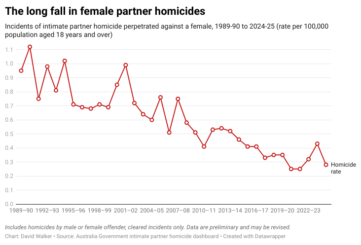

The latest figures on intimate partner femicide show much of a recent rise in men killing women has now been reversed, at least temporarily.

Prologue: Violence against women is a bad thing, and it’s still bad even when, as the article below points out, it used to be far worse. We should be trying hard to lower rates of violence, by finding good solutions and implementing them with urgency. As part of this, we should understand just what we’re dealing with – which is what this series of posts tries to do.
This is my second post on Australian male violence against women. Back in early 2024, I posted here on Troppo about what some community groups argued was an epidemic of male violence. 2022-23 had seen a rise in the number of women killed in intimate partner violence, and 2023-24 was already shaping up to be worse. As community groups voiced their concern, news media focused on the issue for several weeks. South Australia called a Royal Commission.
Some 18 months on, it's worth checking what has happened to those statistics.
The 2024-25 drop is not historic
The news seems good. After two years of rises, 2024-25 brought a huge 35% drop in the rate of intimate partner homicide against women. This fall is shown at the right-hand bottom corner of the graph atop this page. See an interactive version here.
In percentage terms, the 2024-25 drop is the biggest recorded single-year fall in intimate partner homicide against women in Australian history (the records go back to 1989-90). We're now back down near the all-time lows of 2020-2022 – a period when COVID lockdowns may have been making the figures look misleadingly good (though we'll probably never know for sure).
Did Australia celebrate that "historic fall"? Did community groups put out press releases congratulating Australia on slashing this most reliable and most awful of all domestic violence metrics? Did the media announce this biggest fall in the history of our figures?
No, we saw no celebration, no press releases – indeed, not even a media story that I could find.
And here's the thing: I would argue that this non-response was entirely appropriate – for two reasons.
- One reason is that we still have a long way to go in reducing violence against both women and men. Other advanced nations – notably Singapore – have pushed the rate much lower. We can do that too.
- But the second reason is that the 2024-25 fall was no more important than the rises that preceded it. Both seem likely to have been the sort of statistical variations you would expect for a number like this.
Never mind that the 2022-2024 rises grabbed the attention of community groups and the media. Never mind even that the 2020-2022 figures may have been artificially depressed by the COVID lockdowns. Both the rise and the fall are likely to be blips in a bigger long-term change – that long drop in female partner homicides.
For 2024-25, the figures we're looking at show around 30 intimate partner homicides of women. The obvious and correct response is that this is still too many deaths. But in statistical terms, we can make another, more descriptive social science observation: when your numbers are in this territory, the statistics will bounce around a lot. They will bounce around even more than they did when the homicide rate was three times higher, at the start of the 1990s.
The lesson here is that people should have been less eager to draw conclusions about the 2022-23 and 2023-24 rises. Due to the small statistical sizes, we need to take care in drawing conclusions about any short-term changes in homicide, and we need to take even more care when discussing a smaller sub-group of homicides.
This was a key point of last year's post. And it will be true next year too, whether the 2025-26 figures show a rise or a fall.
The hellscape impulse is rising
One lesson from this episode is that in the 2020s, we are eager to infuse our talk about gender violence with heavy moral significance. And that's appropriate. We're talking about people intentionally killing their partners, not only destroying those people's futures but blighting the futures of people around them.
Indeed, while I came to this issue as a philosophical moral realist, I've noticed that even people who would normally not describe themselves that way tend to suddenly become moral realists on this issue. Thankfully, almost everyone seems to think that intimate partner homicide against women is objectively a bad thing, regardless of whether they believe in moral objectivity the rest of the time.
What we struggle to do is stop that legitimate moral impulse from infecting our subsequent analysis of what's happening to Australian society.
The result is that we end up depicting Australia as a sort of growing hellscape of male-on-female homicide.
In fact, as the graph above shows, the opposite is the case. Intimate partner homicide against women has dropped by two-thirds in the past 35 years. That seems an achievement. Other countries have done well too, but we seem to have done better than most.
But that picture is hard to make out amid the blizzard of condemnation. Reality gets overshadowed. Our morality pollutes our epistemology. More and more people seem to want to declare an ineradicable hellscape.
I've mentioned that concern over an epidemic of violence manifested most quickly in the statements of community groups and the media. But the concern reached much wider, into academia and government.
Take the example of Rick Sarre, emeritus professor of law and criminal justice at the University of South Australia, and possessed of a masters degree in criminology. Writing in The Conversation on the same day as my Club Troppo post, Sarre referred to "the seemingly unrelenting number of murders perpetrated by men against their intimate partners". That might be considered a descriptive statement, a characterisation of the state of public worry. But Sarre also described the figures in normative terms, as "cause for mounting concern for all Australians". And he concluded that Australia needed a "transformative" reallocation of resources to the problem.
I don't mean to pick on Sarre. He was far from the only academic to paint such a picture. Indeed, a few days after my initial Club Troppo post, he was quoted in the Australian Financial Review making very sensible observations: he noted falling long-term homicide rates and observed that "long-term trends are often ignored in the rush to analyse short-term crime rate fluctuations". My worry is that Sarre's Conversation piece suggests even sensible people may struggle to resist the hellscape impulse.
The pressures can be intense. A prominent anti-violence activist underlined this for me by ringing me one evening soon after I made my April 2024 post. She wasn't subtle: I should take the whole post down, she said, because I simply didn't know what I was talking about. Sadly, she rang off before I could ask her how often this sort of tactic worked on other people.
One result of this sort of debate: most people end up in, at best, a sort of epistemic fog about certain issues. This site's own Nick Gruen reacted to my original 2024 post by disclosing in the comments that he had been wanting that sort of statistical analysis, "as I’ve asked myself the obvious questions about whether this thing is worse or better than before". Nick has degrees of various sorts in history, public policy, economics and law. At the time, if I had had to bet on anyone outside the criminal justice and social statistics fields understanding the long-term changes in Australian homicide figures, I would have bet on Nick. But even he didn't know what to think.
If Nick Gruen didn't know what was going on with intimate partner homicide in 2024, I don't have any faith that very many ordinary intelligent Australians understood it then, or understand it now.
The repercussions of misunderstanding
When the concern about an "epidemic" of violence suddenly broke out in 2024, the federal government had only recently published its National Plan to End Violence against Women and Children 2022–2032. Nevertheless, it found itself required by political logic to act, no matter what its more careful minds may have thought of the underlying realities. The government pledged more than $925 million in new funding over five years to "address men's violence towards women". This included up to $5000 per person to support those escaping violent relationships.
You might well think that this increase in government support seems like a good idea, so there's no point in complaining about how we got it. Heck, I think that $5000 payment seems a good idea, even though I also think that I don't know enough about the issue to be sure.
At the same time, though, I worry about the effects this sort of thing is having on both government and society.
- As a culture, it is possible that our hellscape impulses are suggesting to some people that violence is somehow inevitable – that our efforts do not make a difference. In fact, while we don't understand the reasons for the fall in intimate partner homicide, it certainly seems possible that our efforts are making a difference.
- We are effectively encouraging lobby groups to make public arguments that are not merely emotive but detached from facts. The events of the past few years don't really show that intimate partner homicide against women is any more of a problem than it was in 2020. But it may be easier and less painful to go with the flow.
- We are not in any way penalising media outlets for writing stories that suggest things which are untrue. We no longer even seem to encourage them to supply both sides of some stories. The only media outlet that I saw attempting rational analysis of the 2024 violence "epidemic" was the Australian Financial Review. (If anyone has other examples, please let me know and I'll mention them here.)
- More broadly, we are encouraging people in general to believe that on very many fronts our lives are growing inexorably worse, even as – at least on many of these fronts – our lives are actually growing better. You famously see this on Twitter, but you might reasonably worry that it is creeping into the wider culture. Again, fight the hellscape impulse.
Australia is much better than it has been, and Australia can be much better than it is now. To encourage future betterment, we should remind Australians of how much betterment has happened already.
Comments: As usual, yes, I'm an idiot about a lot of things. I really will be grateful if you can point out in the comments specifically where my idiocy lies, and detail the huge mistake(s) I'm making. (But maybe don't just ring me up, insist I remove this blog post, and then hang up.)
About the author: I studied criminology at the University of Adelaide and have dealt with statistics and their presentation in various roles for more than 30 years.
Twitter: @shorewalker1
Me too David; "As usual, yes, I’m an idiot about a lot of things. I really will be grateful if you can point out in the comments specifically where my idiocy lies".
! "The homicide victimisation rate for Aboriginal and Torres Strait Islander females was 3.07 per 100,000, compared with 0.45 per 100,000 for non-Indigenous females."
! "that female IPH increased by 28%, from 0.25 homicides per 100,000 in 2021–22, to 0.32 per 100,000 in 2022–23"
And a question before reading;
Q: As femicide / homicide for Aboriginals is approx 7x the rest of us, guess how many times the word "Aboriginal" appears in...
"Giving voice to the silenced
victims: A qualitative study
of intimate partner femicide"
Li Eriksson, Paul Mazerolle and Samara McPhedran
No. 645 March 2022"
###
7x average group seems to be missing, skewing, and unheard compared to "averages" aka white.
And if a 28% increase over 12 months were interest rates, Nic, you and me would shout and we'd never hear the end of it. As the target is a 25% yearly reduction of intimate partner homicide, a minor blip sees gains removed. And funding probably needing to be topped up. A year is a long time if you are scared you'll be murdered.
"Australia sees a rise in female intimate partner homicide in new research report"
30-04-2024
...
“Sixty-nine per cent of homicide victims in 2022–23 were male, with a homicide victimisation rate of 7.65 per 100,000 for Indigenous males compared with 1.04 per 100,000 for non-Indigenous males. The homicide victimisation rate for Aboriginal and Torres Strait Islander females was 3.07 per 100,000, compared with 0.45 per 100,000 for non-Indigenous females.
“In 2022‒23, 16% of homicide incidents were intimate partner homicides (IPH) and 89% of these were perpetrated against a female victim aged 18 years or over.
“The findings of the report confirm through state and territory police offence records and coronial records that female IPH increased by 28%, from 0.25 homicides per 100,000 in 2021–22, to 0.32 per 100,000 in 2022–23.
“The figures in this latest report provide an important baseline to measure progress towards achieving the national targets outlined in the National Plan to End Violence against Women and Children 2022–2032, to reduce female IPH by 25% per year over 5 years,” Dr Brown said.
The AIC is also developing a statistical dashboard, as announced by Attorney-General Mark Dreyfus in a joint media release in November 2023, with data to be updated on a quarterly basis. This will be released mid-year and will continue to provide more timely reporting on intimate partner homicide.
...
https://www.aic.gov.au/media-centre/news/australia-sees-rise-female-intimate-partner-homicide-new-research-report
As femicide / homicide for Aboriginals is approx 7x the rest of us, guess how many times the word "Aboriginal" appears in...
"Giving voice to the silenced
victims: A qualitative study
of intimate partner femicide"
Li Eriksson, Paul Mazerolle and Samara McPhedran
No. 645 March 2022
...
"Acknowledgements
This project was supported by a Criminology Research Grant (CRG 11/16–17). The authors would like to thank the Queensland Homicide Victims’ Support Group for their support for this project"
[ PATRON, COMMISSIONER STEVE GOLLSCHEWSKI APM
COMMISSIONER OF POLICE, QUEENSLAND POLICE SERVICE
https://qhvsg.org.au/who-we-are/board/ ]
https://www.aic.gov.au/sites/default/files/2022-03/ti645_giving_voice_to-the_silenced_victims_v2.pdf
Guessed yet?
Z E R O. Very qualitative, not representative perhaps. Reading the Queensland Homicide Victims’ Support Group about us, it seems you get invited after tragedy. If a group has 7x worse stats, wouldn't 7x more of the 7x group be invited?
And finally, I'm not spending 'Buy article/chapter (GBP£25.00)" on this article I appreciate more than statistics, as it is trying to;
"Translating research about domestic and family violence into practice in Australia: possibilities and prospects
Authors:
Laura Tarzia, Cathy Humphreys, and
Kelsey Hegarty
Copyright: © Policy Press 2017
https://doi.org/10.1332/174426416X14742825885830
Nor this worthy article trying to elucidate pathways to "understanding of nonclinical risk assessment by organizing the perpetrator journey to homicide"...
"Restricted access
online August 5, 2019
Request permissions
"Intimate Partner Femicide: Using Foucauldian Analysis to Track an Eight Stage Progression to Homicide
Jane Monckton Smith
...
"The aim of this article is to develop understanding of nonclinical risk assessment by organizing the perpetrator journey to homicide using temporal sequencing and drawing from coercive control discourse."
https://journals.sagepub.com/doi/10.1177/1077801219863876#core-collateral-purchase-access
The hysteria (sorry about the etymology of this word) about the uptick was no different to Andrew Bolt comparing temperatures to the peak in 1998. They compared current rates to the lows of 2021. The general trend is massively down and who could doubt that it would be, based on cultural changes the last three decades. I am not sure why you think this is a mystery. I posted a very similar graph on the Statistical Society of Australia discussion forum 18 months ago showing that rates decreased by a factor of THREE over 30 years. If you take account of the loosened definition of IPV the actual factor decrease will be even larger. I got massive push back of an adolescent nature. All of them questions my motives in a manner they would not have if I had noted an increase in IPV. I have also posted data from the Federal government reports on Aboriginal deaths in custody which show that white death rates are higher than black death rates. The main response was to criticise me for using the word Aborigine instead of Aboriginal. And this is the peak body for Australian statisticians! Nick’s brother heads the ABS and would no doubt have stories to tell if he were allowed to disclose them. Was Nick surprised at your earlier post? The stats are not hard to find. The media have been completely colonised by activists and actively suppress empirical facts that contradict the narrative – from the relationship of rents to immigration to comorbidities if trans-teens. Seriously, if climate change were discovered 5 years ago I just wouldn’t believe it. I would not trust Nature of the AAS. Because academia can no longer be trusted. Since it was predicted and measured 30-50 years ago when academics not only thought there was such a thing as truth but cared about it, we can be confident that they were reporting something real. BTW, your are too kind to Sarre and the horrible woman who called you up to abuse you.
I'm flattered by David's description of me. But I have faith in the division of labour. But it's not the one administered by the university system. I proceed with the same kind of suspicion that both David and Chris have. I don't want to spend lots of time making myself an expert on a particular thing. Part of the problem is that one can look up the basic data, but you might be missing something. That's one of the reasons I was happy to read David's last post on this and said so. Because he'd gone to the trouble on this - as for instance I'd gone to the trouble of farcical measures of wellbeing, including from august organisations who, you'd think, would not want to make complete fools of themselves, like the OECD. But it turns out they're rather partial to it. It takes a while before you can be confident that you're not missing something important. And there was that uptick in the numbers that the panic merchants could point to.
Always good to run campaigns with farcical objectives. Like this one.